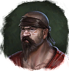

Открыть в интерактивной вики →
| Уровень | 45 |
|---|---|
| Сила (PvE) | 986 |
| Аспект | Gherudu |
| Здоровье | 1200 |
| Мана | 1000 |
| Выносливость | 1000 |
Локация
- Сокровищница
- Башня бандитов
- Башня бандитов (путь испытания)
Команда


Дроп


Умения
 Удар Головой Удар Головой — критический удар
Удар Головой Удар Головой — критический удар Бросок камнем Бросок камнем
Бросок камнем Бросок камнем Ярость Ярость
Ярость Ярость